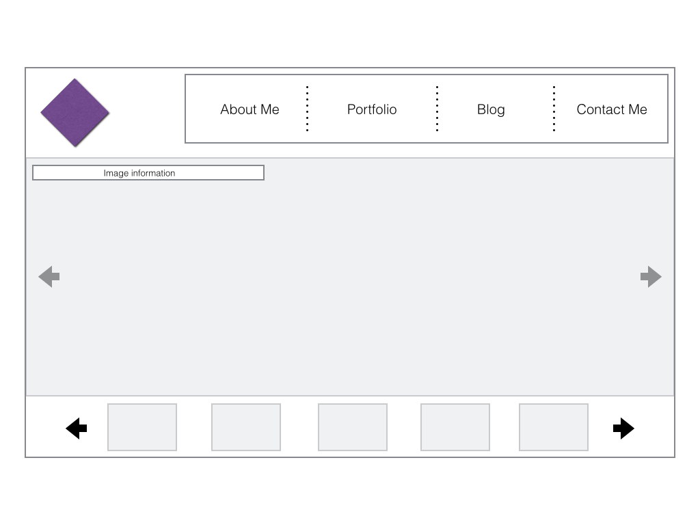

Website Inspirations, Creative Ideas and Design
Which two websites are you most inspried by?
There are many websites that inspire me, provoke creative ideas and design. For this unit I decided to analyse my employers website (Adform) and a fashion blog I read (Sincerely, Jules)
How do they exhibit effective use of space, size or balance?
Adform
Space
- Large positive and negative space
- Logo and page tabs are in the conventional place
Size
- Large contrasting text and colourful imagery
Balance
- The bold text on the left-hand side is balanced with the large cube animation on the right-hand side
- Contrasting coloured text - white on black
Sincerely, Jules
Space
- Large positive space (image)
- Simple negative space with contrasting text and banner
Size
- Large image centred - focal point
- Bold contrasting white text on a black background
Balance
- To draw focus the main image is centred, making it the focal point
- The main image on most desktops will go below the fold, this will entice users to scroll down the page
- The contrasting black title on the white background and black banner with contrsting white text also draws attetention
What makes them similar and different?
Similarities
- Large imagery/text
- Contrasting text
- Logos and tabs are both situated in the conventional place
Differences
- Adform uses a lot more colour, making it a very busy website to look at
- Sincerely, Jules mainly uses the contrasting colours black aand white to create clean visual aesthetics and layout. This theme throughout looks sophisticated and modern
- Adform has several focal points, whereas Sincerely Jules has a single focal point
- There is a diferenece in balance with these two sites, Adform is symmetrically balanced (large text on left-hand side, large imagery on right-hand side), Sincerely Jules is balanced by one central image
Thumbnail Sketches
Site Map
Home Page
I would like the focal point of my home page to be an image (or sideshow of images), or my logo. This would be a combination of large positive and negative space. I would then like the flow of the user's eye to move onto menu bar and navigate through my website.
Option 1
Option 2
About Me
Here I plan on making the layout and creative very simple and clear so that the user can gather/read information about me without being distracted or confused. This will be done with an image of myself (so users are more likely to remember me) and my information content wrapping around this picture.
Portfolio: Home Page
For my portfolio I would like one main focal point, an image of my work, with a mini menu bar prompting the user to view my work by its category.
Option 1

Option 2
Portfolio: Print
Now that the user has choosen a specific category to look at, that work will be the focal point. The user will be able to navigate through my work, while readig information about that piece. On Option 2 I have added the feature of a preview bar at the bottom of the page which allows users to look ahead and choose what to see.
Option 1
Option 2

Blog
As my blog will contain various articles I will display them in a slideshow format or a column layout with thumbnails relating to it's content.
Option 1
Option 2
Contact Me
As my contact information is an important part I will keep this page fairly simple. I have two different options for creating this page. To either have my logo present large so that users remember it, or, display my contact information and thumbnails of my best work below (reminding them how great my work is and that they should contact me!)
Option 1
Option 2